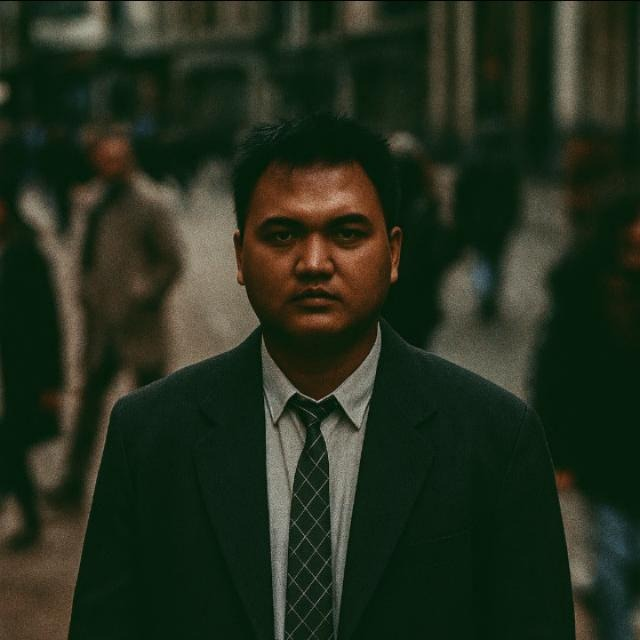

Maulana Ferdi Irawan
Seorang penjelajah kode dan kata yang tinggal di dunia digital.
Halo! Saya biasa dipanggil Ferdi. Mulai menulis kode sejak 2020 dan menulis blog sejak 2026 (iya, baru sekarang!). Saya percaya teknologi harusnya mempermudah hidup, bukan mempersulit. Di blog ini, saya mendokumentasikan perjalanan belajar, proyek sampingan, dan oponi tentang dunia teknologi terkini.
Selain ngoding, saya suka kopi hitam, jalan-jalan naik motor, dan main game indie.
My Tools Favorit Guwej
- Photoshop
- Figma
- VS Code
- Canva
- Jiwa dan Raga
- Kedua Tangan dan Sepuluh Jari
- ChatGPT
- Dan lain-lain (Males ngetik, IZIIINNNN)